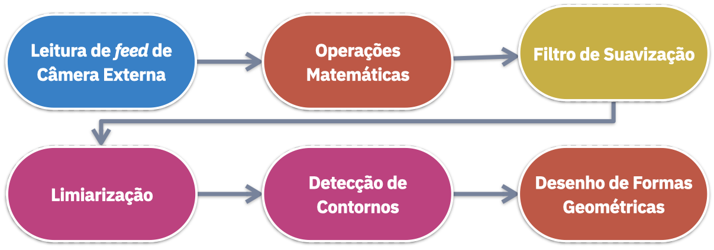

Projeto Final
 Objetivo do Projeto: Elaborar um protótipo de sistema para Detecção de Movimento em uma câmera de segurança.
Objetivo do Projeto: Elaborar um protótipo de sistema para Detecção de Movimento em uma câmera de segurança.
- Elaborar um script python (
scripts/movement.py) - O script deve ler o feed de uma webcam
- Deve aplicar as técnicas necessárias para detectar movimentos no vídeo
- A saída deve apresentar as detecções dentro de caixas delimitadoras
Metodologia
A metodologia proposta como solução para o projeto é a seguinte:

Solução
O código a seguir implementa as funcionalidades requisitadas:
# ---------------------------------------------------------------------------- #
# Projeto Final #
# ---------------------------------------------------------------------------- #
# Objetivo: Implementar uma metodologia de detecção de movimentos em um feed de video
# Passo a Passo:
# 1. Leitura de feed de Webcam
# 2. Subtrair o frame atual do frame anterior
# 3. Aplicar filtro de GaussianBlur
# 4. Aplicar Limiarização
# 5. Encontrar os contornos dos movimentos
# 6. Desenhar bounding boxes
# Importar as bibliotecas necessárias
import cv2
# Criar o objeto Capture (Selecionar o id da webcam correta)
capture = cv2.VideoCapture(2)
# Ler frames de webcam
ret, frame1 = capture.read()
ret, frame2 = capture.read()
while capture.isOpened():
# Subtrair o frame atual do frame anterior
diff = cv2.absdiff(frame1, frame2)
# Converter para escala de cinza
gray = cv2.cvtColor(diff, cv2.COLOR_BGR2GRAY)
# Aplicar Gaussian Blur
blur = cv2.GaussianBlur(gray, (15, 15), 0)
# Aplicar Limiarização
_, thresh = cv2.threshold(blur, 20, 255, cv2.THRESH_BINARY)
# Encontrar os contornos
contornos, _ = cv2.findContours(
thresh, cv2.RETR_TREE, cv2.CHAIN_APPROX_SIMPLE
)
for contorno in contornos:
# Desenhar as caixas delimitadoras
(x, y, w, h) = cv2.boundingRect(contorno)
# Filtrar contornos com área menor que 3000
# Ajustar o valor se necessário
if cv2.contourArea(contorno) < 3000:
continue
# Desenhar o retângulo
cv2.rectangle(frame1, (x, y), (x + w, y + h), (0, 255, 0), 5)
# Alerta de Movimento
cv2.putText(
frame1,
"Movimento Detectado!",
(30, 80),
cv2.FONT_HERSHEY_PLAIN,
4,
(0, 0, 255),
4,
)
# Visualizar frame
cv2.imshow("Frame", frame1)
# Próximo frame
frame1 = frame2
ret, frame2 = capture.read()
# Aguardar botão para fechar janelas
if cv2.waitKey(40) == ord("q"):
break
cv2.destroyAllWindows()
capture.release()